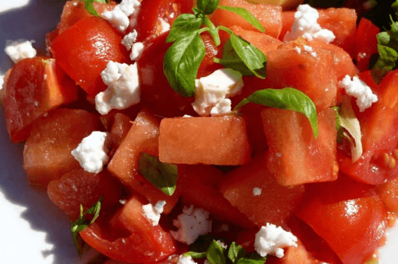

Watermon and Tomato Salad Recipe Recipe
Double red hitta quitta salad
Ingredients
- 1 pint cherry tomatoes, halved
- 2 cups cubed seeded watermelon
- 6 large basil leaves, thinly sliced
- ½ cup crumbled feta cheese
- 1 teaspoon lemon zest
- 2 tablespoons extra-virgin olive oil
- 1 ½ tablespoons white balsamic vinegar
- Salt and pepper to taste
Steps
- Place the tomatoes and watermelon into a mixing bowl.
- Sprinkle with the basil, feta cheese, and lemon zest.
- Drizzle with the olive oil and balsamic vinegar.
- Toss, season to taste with salt and pepper before serving.